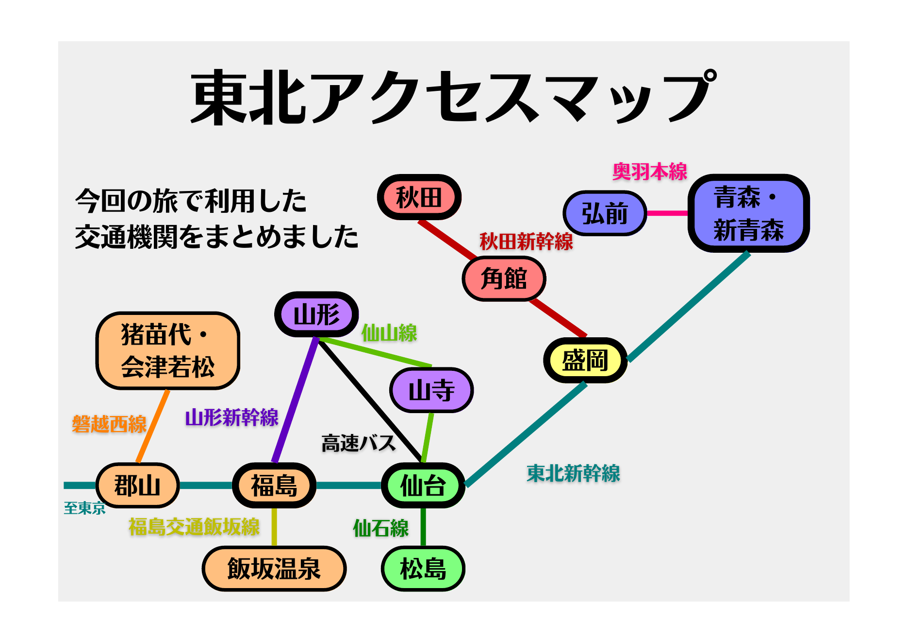
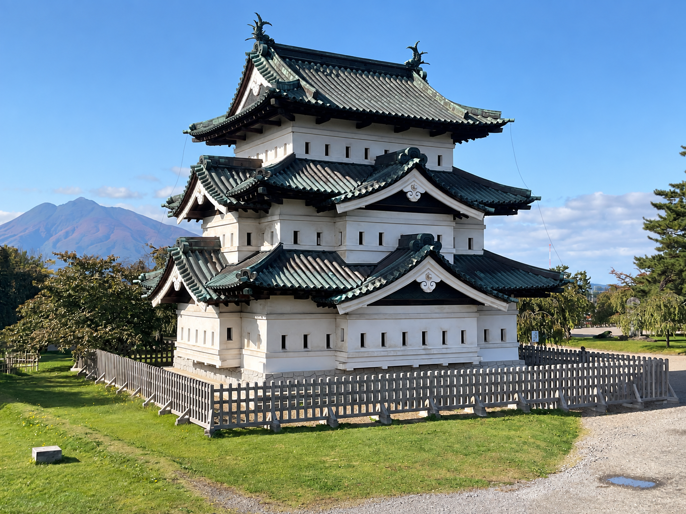
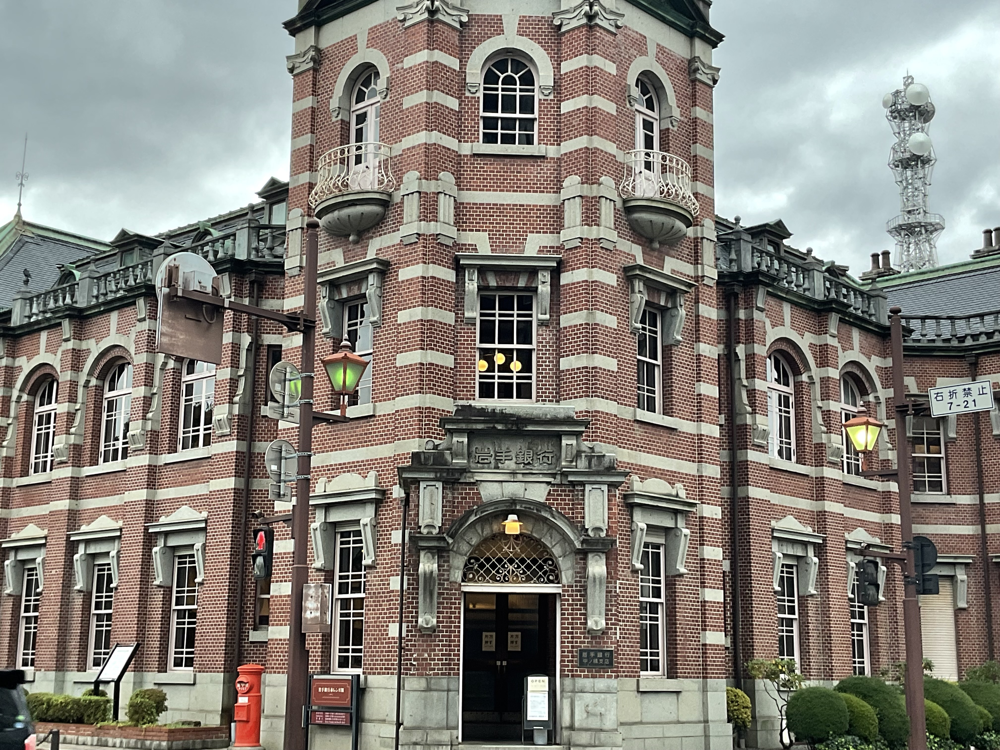
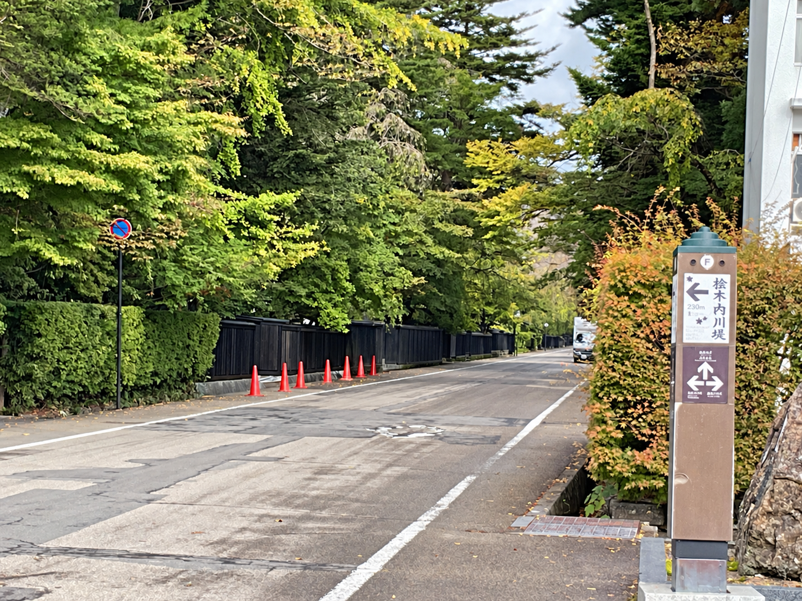
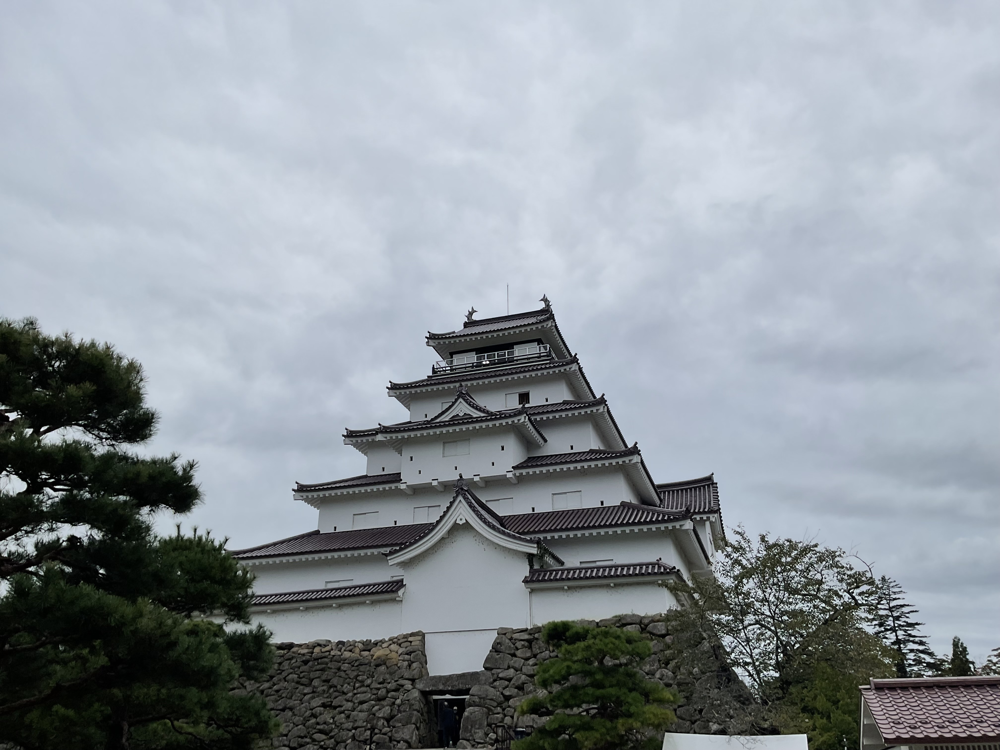
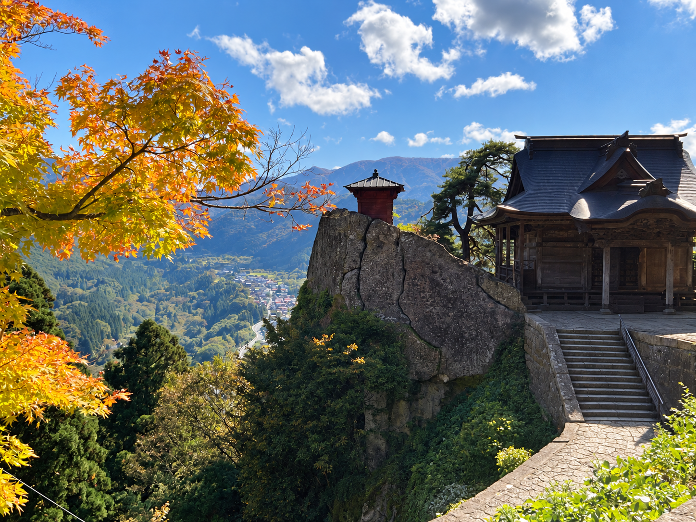
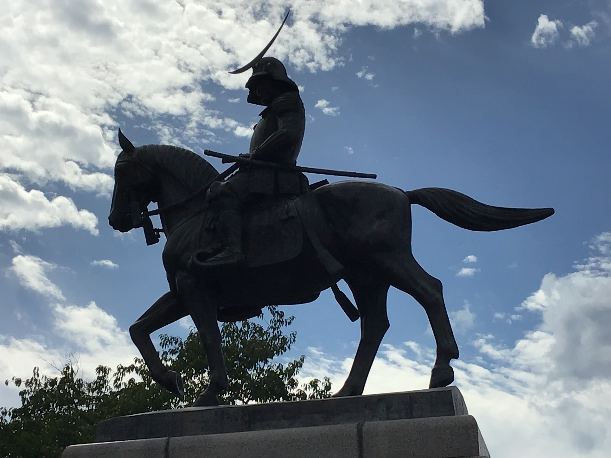
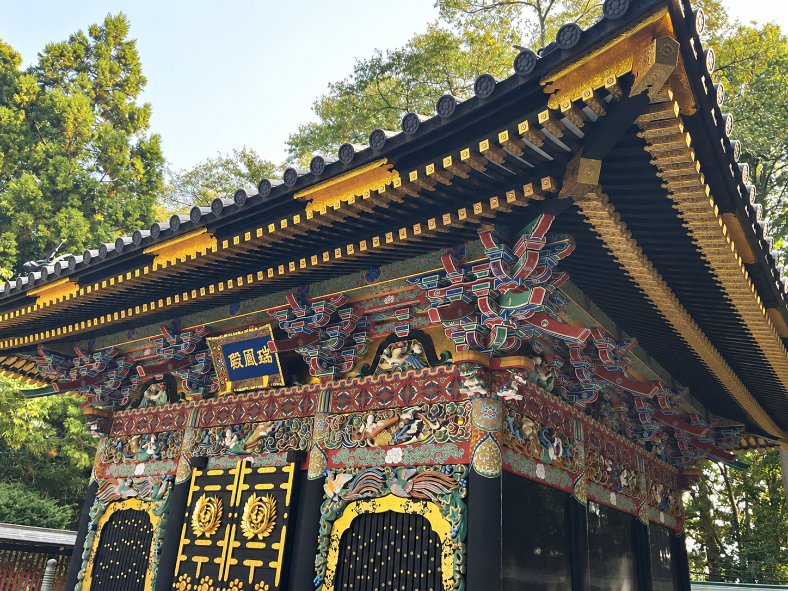

FIELD NOTE 01 / TOHOKU EDITION
東北編：
東北満喫旅
新幹線と在来線、高速バスをつないで、7泊8日で東北6県を巡った一人旅。町ごとの文化と自然を、自分の足でたどりました。
TOHOKU FIELD NOTES6県を
ぐるっと一周弘前 → 秋田 → 会津 → 山形 → 仙台
ぐるっと一周弘前 → 秋田 → 会津 → 山形 → 仙台
BEGINNING
仙台で感じた空気を、
もう一度確かめたかった。
大学院生のころ、東北大学の研究集会に参加しました。そのときに感じた仙台の空気が忘れられず、いつか東北をゆっくり回りたいと思っていました。
飛行機で向かう予定を出発直前に新幹線へ変更し、思い出のある仙台から旅を始めることに。自分で計画した8日間で、弘前から仙台まで東北6県を巡りました。
8 DAYS / ITINERARY
0日目から7日目まで、
実際に歩いた旅程
広島から仙台へ — 思い出の地で前泊
弘前・青森 — 城下町と港町を歩く
青森・盛岡 — のっけ丼と歴史ロマン
角館・秋田 — 武家屋敷と日本の原風景
猪苗代・会津若松・福島・飯坂温泉
山寺・山形 — 山の力と城下町
松島・仙台 — 自然と文化が溶け合う一日
瑞鳳殿・大崎八幡宮 — 仙台Deep

DAY BY DAY
町を歩いて残った、
8つの感触
PHOTOGRAPHS
日付を追って、
東北をたどる。
城下町の歴史、山に抱かれた寺、海と街に息づく伊達文化。旅の順に写真を並べると、北から南へ進んだ時間がもう一度立ち上がります。







AFTER THE TRIP
自分で考え、
実行するということ。
東北は静かでありながら、文化・歴史・自然・食をとても大切にしている場所だった。そのことが、町を歩くほどに伝わってきました。
「何もない」と言われる場所では決してなかった。自分で計画して行く旅は、必ず思い出になる。
計画を立て、自分のお金で移動し、知らない町を歩く。自分の力で考えて実行する「自己実現」の豊かさを、この旅で知りました。またいろいろな景色を見に行きたいと思います。